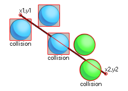

collision_line( x1, y1, x2, y2, obj, prec, notme );
| Argument | La description |
|---|---|
| x1 | La coordonnée x du début de la ligne. |
| y1 | La coordonnée y du début de la ligne. |
| x2 | La coordonnée x de la fin de la ligne. |
| y2 | La coordonnée y de la fin de la ligne. |
| obj | L'objet à vérifier pour les collisions par exemple. |
| prec | Si la vérification est basée sur des collisions pixel-parfait (vrai = lent) ou sa boîte englobante en général (faux = rapide). |
| notme | Indique si l'instance d'appel, le cas échéant, doit être exclue (true) ou non (false). |
Renvoie: ID d'instance ou noone
La ligne de collision vérifie le long d'une ligne du point x1, y1 au point x2, y2 pour une collision avec une instance de l'objet spécifié par l'argument "obj". Cette vérification peut être précise ou non, mais pour que les collisions précises puissent être activées, l'objet ou l'instance que vous recherchez doit également avoir des collisions précises activées pour leur sprite. Sinon, la vérification par défaut est basée sur les boîtes de délimitation. L'image suivante illustre comment cela fonctionne:

Rappelez - vous, pour des collisions précises à considérer à la fois l'image - objet de l' objet et la fonction de collision doit avoir marqué comme précis sur. Il convient également de noter que la valeur de retour de la fonction peut être l'id de l'une des instances considérées comme étant en collision le long de la ligne, donc si trois instances chevauchent la ligne définie, l'un de leurs identifiants pourrait être la valeur de retour de la fonction.
with (obj_Enemy)
{
if collision_line(100, 400, 100, 600, id, false,
false) instance_destroy();
}
Ce code obtient toutes les instances de "obj_Enemy" pour vérifier une ligne de 100x, 400y à 100x, 600y pour une collision avec eux-mêmes, et s'il y en a un, ils sont détruits.